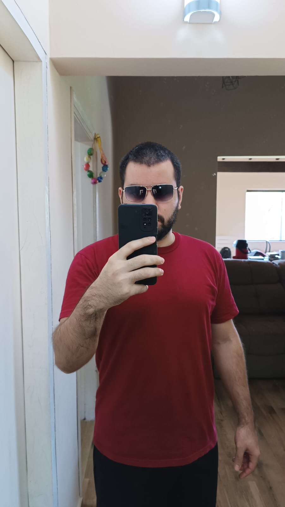

Marcos González
Desarrollador web y Diseño UX/UI

Sobre mí
Estudiando Licenciatura en Ciencias Informáticas, he orientado mi desarrollo profesional hacia
el campo del Desarrollo Web.
Como estudiante de Desarrollo Web, me enfoco en la aplicación de buenas prácticas, patrones de
diseño, depuración, pruebas, entre otros aspectos relevantes.
Forman parte de mi rutina como desarrollador de software el uso de tecnologías como
HTML5, CSS3,
Javascript, React.js, Node.js, Python y Django. Asimismo, estoy constantemente
ampliando mis
conocimientos en estas áreas y explorando nuevas tecnologías y herramientas.
Currículum Vitae
Proyectos Realizados
Sistema Ágil de gestión de proyectos
HTML5, CSS3, Javascript, Python, Django
El producto final es un sistema ágil de gestión de proyectos, centrado en el marco SCRUM para el
desarrollo ágil de software. Con gráficos Kanban y Burndown Chart.
Más detalles:
Podrá agregar usuarios con sus respectivos roles dentro de los proyectos.
Sprints para gestionar el proyecto por partes con sus respectivas User Stories, que son las tareas
del proyecto.
Tiene Dashboard: Kanban y Burndown Chart, para ver gráficamente el avance del proyecto y tener una
visión general del estado del proyecto.

Contacto
© Portfolio Marcos González. All rights reserved. Design: HTML5 UP.